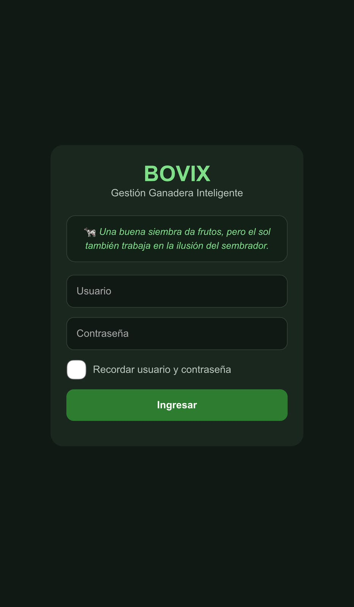
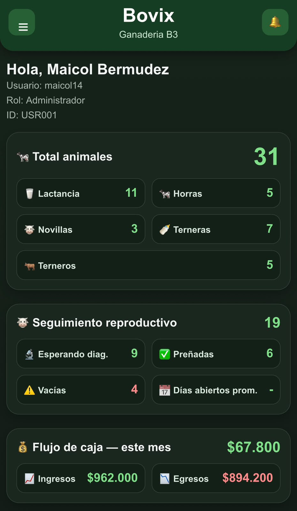
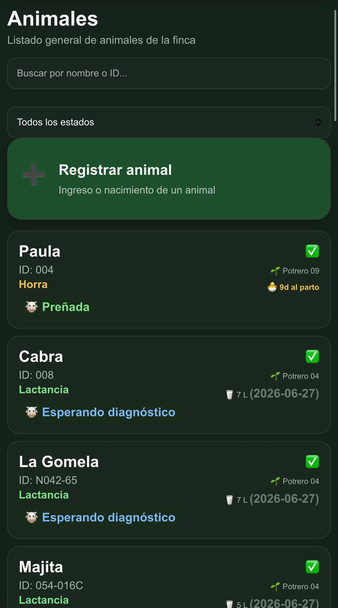
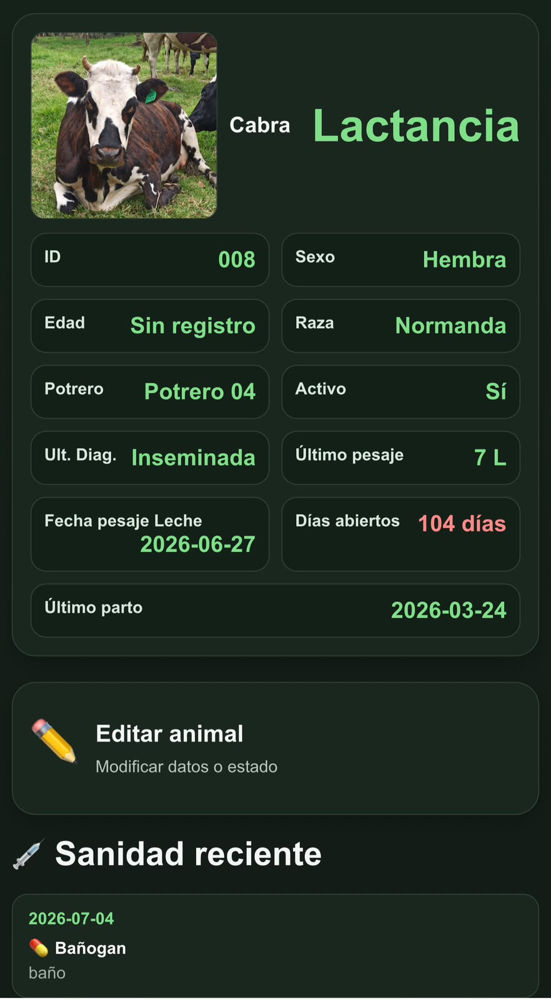
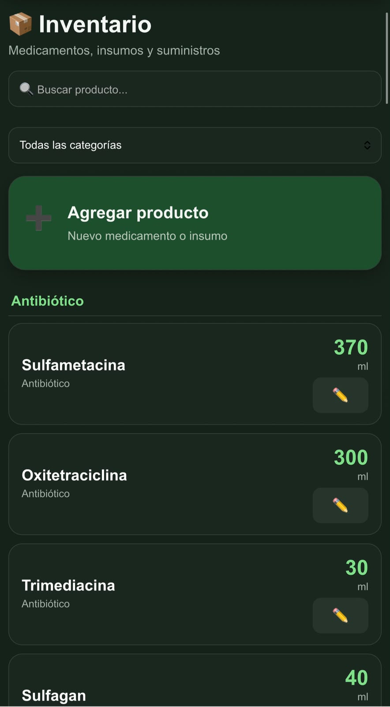
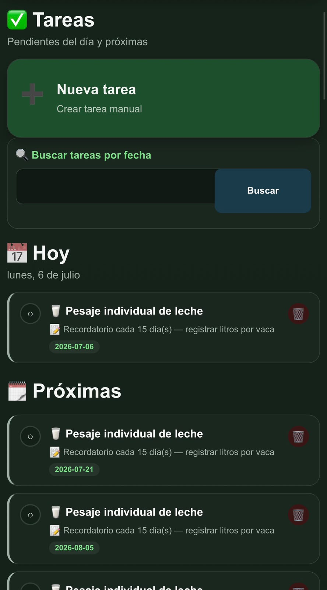
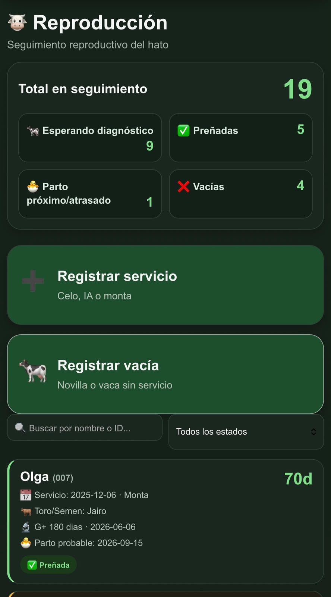
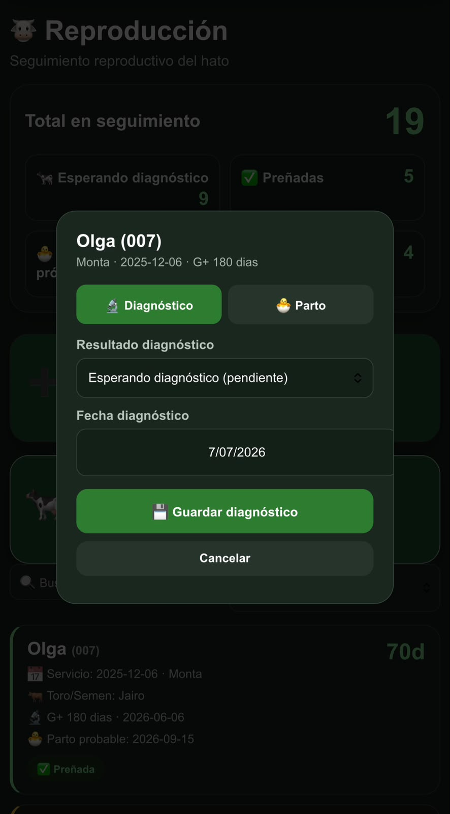
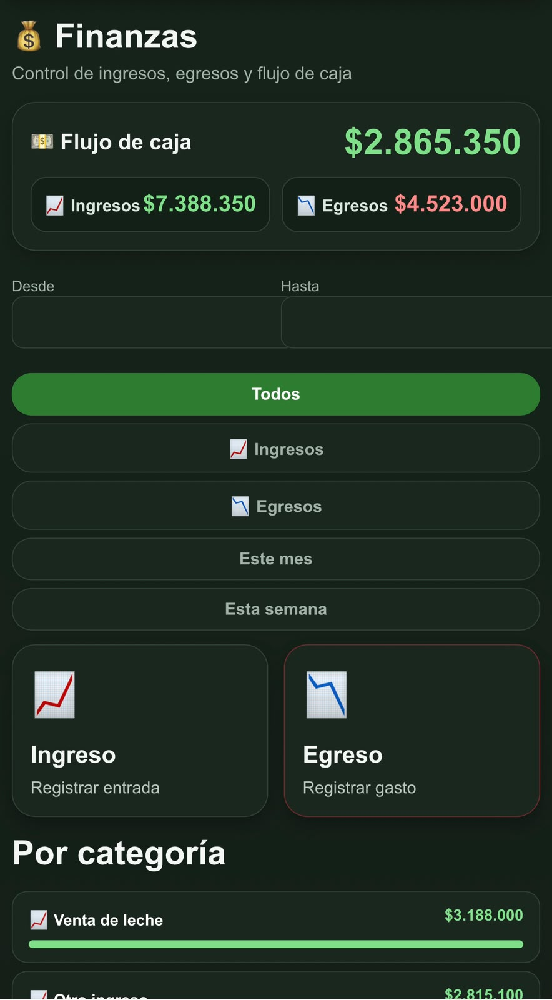

Antes
Cuadernos que se mojan, hojas que se pierden y datos que dependen de la memoria de alguien.
Bovix es la aplicación para ganadería de leche y levante que reúne tus animales, la producción de leche, la sanidad, la reproducción, los potreros y las finanzas en un solo lugar. Sin cuadernos. Sin hojas perdidas.

Del cuaderno al celular
Cuadernos que se mojan, hojas que se pierden y datos que dependen de la memoria de alguien.
Cada animal, cada litro de leche y cada peso de la finca, registrado y consultable al instante.
Módulos
Toca cualquier módulo para ver qué hace.
El corazón de Bovix. Ficha completa de cada animal del hato: número, nombre, raza, categoría (vaca, novilla, ternero, levante), peso y estado. Es el censo de tu finca, siempre actualizado y siempre a la mano.
Registra los litros de cada ordeño, por día y por vaca o por lote. Ve cómo se comporta la producción de la finca a lo largo del tiempo y detecta a tiempo cuándo una vaca baja su producción.
Calcula automáticamente cuánto te deben pagar por la leche entregada: litros del periodo por el precio pactado, listo para comparar contra lo que te paga el comprador. Se acabaron las cuentas a mano.
Historial sanitario de cada animal: vacunas, desparasitaciones, tratamientos y productos aplicados, con fecha y responsable. Cuando llegue una visita del ICA o del veterinario, todo está registrado.
Programa protocolos preventivos que se repiten solos: baños cada semana, vitaminas cada mes, desparasitación cada 3 meses. Bovix te avisa cuando un protocolo está próximo a vencer para que nada se pase.
Seguimiento reproductivo completo del hato: celos, servicios (monta o inseminación), diagnósticos de preñez y fechas probables de parto. De un vistazo sabes cuántas están preñadas, cuántas vacías y cuáles esperan diagnóstico.
Registra cada potrero de la finca con su área, uso y estado (ocupado o en descanso), con fechas de entrada y salida. Fundamental para manejar bien la rotación y cuidar la pastura.
Mueve lotes de animales entre potreros y deja el registro de cada traslado. Siempre sabes qué animales están en qué potrero y cuánto tiempo llevan ahí.
Control de insumos y productos de la finca: medicamentos, sales, concentrados, herramientas. Sabes qué hay, cuánto queda y cuándo toca comprar, antes de que haga falta.
Asigna trabajo al personal de la finca y confirma cuando queda hecho. Cada trabajador sabe qué le toca hoy, y tú sabes qué se hizo y qué quedó pendiente.
Define una vez los pasos de un manejo (por ejemplo, el protocolo de un tratamiento) y Bovix genera las tareas agrupadas automáticamente cada vez que lo apliques.
El diario de la finca: nacimientos, muertes, ventas, compras y cualquier evento del día a día queda anotado con su fecha. Nada depende de la memoria.
Si transformas parte de la leche, registra la producción de queso: cuánta leche entró, cuánto queso salió y su destino. Ideal para fincas que venden leche y derivados.
Ingresos y gastos de la operación, organizados por categoría. Al final del mes no estimas si la finca dio o no dio: lo ves en números reales.
Crea usuarios para tus trabajadores con permisos según su rol. El administrador ve todo; el personal de campo ve solo lo que necesita para trabajar.
Próximamente: pregúntale a Bovix por WhatsApp — "¿cuántos terneros nacieron esta semana?", "¿qué tareas de sanidad hay hoy?" — y recibe la respuesta al instante, sin abrir la app.
La aplicación real
Estas pantallas son del sistema funcionando hoy en fincas reales — no son diseños inventados. Desliza para verlas.








Planes
Empieza gratis y crece cuando tu finca lo pida. Sin permanencia, sin sorpresas.
Para probar Bovix con tu finca.
Para fincas medianas que ya están en marcha.
Administra la finca desde WhatsApp con inteligencia artificial.
Para veterinarios que recomiendan Bovix a sus clientes ganaderos.
Sin permanencia. Cancelas cuando quieras. Todos los planes incluyen respaldo en la nube.
Cómo se usa
En el canal de YouTube de Bovix vamos publicando videos de cada módulo, grabados directamente desde la app en una finca real.
Confiabilidad
Bovix no es una idea de laboratorio: nació dentro de Ganadería B3, una finca lechera real en Colombia, y se usa todos los días para manejar el hato completo.
Confían en Bovix
"Bovix nació aquí. Con él manejamos el hato completo todos los días: la leche de cada ordeño, la reproducción, la sanidad y las finanzas de la finca."
"Lo uso en el trabajo del día a día en la finca. Las tareas llegan claras y todo lo que hago queda registrado sin papeleo."
"Tener el historial sanitario y reproductivo de cada animal en el celular cambia la forma de tomar decisiones en el hato."
"Es la herramienta que le faltaba a la ganadería mediana en Colombia: completa, sencilla y a un precio que cualquier finca puede pagar."
Preguntas frecuentes
Solo necesitas señal de datos en el celular al momento de registrar o consultar, como para usar WhatsApp. No necesitas computador, ni wifi, ni instalar nada: Bovix funciona desde el navegador del celular.
Sí. Bovix funciona igual con 10 que con 500 animales, y el precio es el mismo porque los animales son ilimitados. Entre más pronto empieces a registrar, más completo será el historial de tu hato.
No. Está diseñado para usarse en el potrero, con botones grandes y pantallas simples. Si tu trabajador sabe usar WhatsApp, sabe usar Bovix. Además cada usuario ve solo lo que necesita según su rol.
Tus datos se respaldan en la nube de Google con copias de seguridad automáticas todos los días. Y son tuyos: si algún día decides retirarte, te entregamos toda tu información de la finca.
Sí, en Android y iPhone, sin descargar nada de la tienda de aplicaciones. Entras desde el navegador con tu usuario y contraseña, y puedes dejar el acceso directo en la pantalla de inicio como si fuera una app.
El pago es mes a mes y sin permanencia: si un mes no quieres seguir, simplemente no pagas. El primer mes es completamente gratis y no pedimos tarjeta para empezar.
Tienes soporte directo por WhatsApp con quienes construimos Bovix — no con un robot ni un call center. Y como usamos Bovix en nuestra propia finca, entendemos exactamente lo que necesitas.
Escríbenos por WhatsApp, te creamos tu usuario y empiezas hoy mismo tu mes gratis.